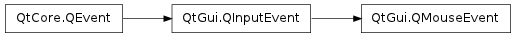

QMouseEvent ¶

Synopsis ¶
Functions ¶
Static functions ¶
- def createExtendedMouseEvent (type, pos, globalPos, button, buttons, modifiers)
Detailed Description ¶
The PySide.QtGui.QMouseEvent class contains parameters that describe a mouse event.
Mouse events occur when a mouse button is pressed or released inside a widget, or when the mouse cursor is moved.
Mouse move events will occur only when a mouse button is pressed down, unless mouse tracking has been enabled with QWidget.setMouseTracking() .
Qt automatically grabs the mouse when a mouse button is pressed inside a widget; the widget will continue to receive mouse events until the last mouse button is released.
A mouse event contains a special accept flag that indicates whether the receiver wants the event. You should call PySide.QtCore.QEvent.ignore() if the mouse event is not handled by your widget. A mouse event is propagated up the parent widget chain until a widget accepts it with PySide.QtCore.QEvent.accept() , or an event filter consumes it.
Note
If a mouse event is propagated to a widget for which Qt.WA_NoMousePropagation has been set, that mouse event will not be propagated further up the parent widget chain.
The state of the keyboard modifier keys can be found by calling the PySide.QtGui.QInputEvent.modifiers() function, inherited from PySide.QtGui.QInputEvent .
The functions PySide.QtGui.QMouseEvent.pos() , PySide.QtGui.QMouseEvent.x() , and PySide.QtGui.QMouseEvent.y() give the cursor position relative to the widget that receives the mouse event. If you move the widget as a result of the mouse event, use the global position returned by PySide.QtGui.QMouseEvent.globalPos() to avoid a shaking motion.
The QWidget.setEnabled() function can be used to enable or disable mouse and keyboard events for a widget.
Reimplement the PySide.QtGui.QWidget event handlers, QWidget.mousePressEvent() , QWidget.mouseReleaseEvent() , QWidget.mouseDoubleClickEvent() , and QWidget.mouseMoveEvent() to receive mouse events in your own widgets.
- class PySide.QtGui. QMouseEvent ( type , pos , button , buttons , modifiers ) ¶
- class PySide.QtGui. QMouseEvent ( type , pos , globalPos , button , buttons , modifiers )
-
Parameters: - button – PySide.QtCore.Qt.MouseButton
- globalPos – PySide.QtCore.QPoint
- modifiers – PySide.QtCore.Qt.KeyboardModifiers
- type – PySide.QtCore.QEvent.Type
- pos – PySide.QtCore.QPoint
- buttons – PySide.QtCore.Qt.MouseButtons
-
Return type: PySide.QtCore.Qt.MouseButton Returns the button that caused the event.
Note that the returned value is always Qt.NoButton for mouse move events.
See also
PySide.QtGui.QMouseEvent.buttons() Qt.MouseButton
-
Return type: PySide.QtCore.Qt.MouseButtons Returns the button state when the event was generated. The button state is a combination of Qt.LeftButton , Qt.RightButton , Qt.MidButton using the OR operator. For mouse move events, this is all buttons that are pressed down. For mouse press and double click events this includes the button that caused the event. For mouse release events this excludes the button that caused the event.
See also
PySide.QtGui.QMouseEvent.button() Qt.MouseButton
- static PySide.QtGui.QMouseEvent. createExtendedMouseEvent ( type , pos , globalPos , button , buttons , modifiers ) ¶
-
Parameters: - type – PySide.QtCore.QEvent.Type
- pos – PySide.QtCore.QPointF
- globalPos – PySide.QtCore.QPoint
- button – PySide.QtCore.Qt.MouseButton
- buttons – PySide.QtCore.Qt.MouseButtons
- modifiers – PySide.QtCore.Qt.KeyboardModifiers
Return type:
- PySide.QtGui.QMouseEvent. globalPos ( ) ¶
-
Return type: PySide.QtCore.QPoint Returns the global position of the mouse cursor at the time of the event . This is important on asynchronous window systems like X11. Whenever you move your widgets around in response to mouse events, PySide.QtGui.QMouseEvent.globalPos() may differ a lot from the current pointer position QCursor.pos() , and from QWidget::mapToGlobal( PySide.QtGui.QMouseEvent.pos() ).
- PySide.QtGui.QMouseEvent. globalX ( ) ¶
-
Return type: PySide.QtCore.int Returns the global x position of the mouse cursor at the time of the event.
- PySide.QtGui.QMouseEvent. globalY ( ) ¶
-
Return type: PySide.QtCore.int Returns the global y position of the mouse cursor at the time of the event.
- PySide.QtGui.QMouseEvent. hasExtendedInfo ( ) ¶
-
Return type: PySide.QtCore.bool
- PySide.QtGui.QMouseEvent. pos ( ) ¶
-
Return type: PySide.QtCore.QPoint Returns the position of the mouse cursor, relative to the widget that received the event.
If you move the widget as a result of the mouse event, use the global position returned by PySide.QtGui.QMouseEvent.globalPos() to avoid a shaking motion.
- PySide.QtGui.QMouseEvent. posF ( ) ¶
-
Return type: PySide.QtCore.QPointF Returns the position of the mouse cursor as a PySide.QtCore.QPointF , relative to the widget that received the event.
If you move the widget as a result of the mouse event, use the global position returned by PySide.QtGui.QMouseEvent.globalPos() to avoid a shaking motion.
- PySide.QtGui.QMouseEvent. x ( ) ¶
-
Return type: PySide.QtCore.int Returns the x position of the mouse cursor, relative to the widget that received the event.
- PySide.QtGui.QMouseEvent. y ( ) ¶
-
Return type: PySide.QtCore.int Returns the y position of the mouse cursor, relative to the widget that received the event.